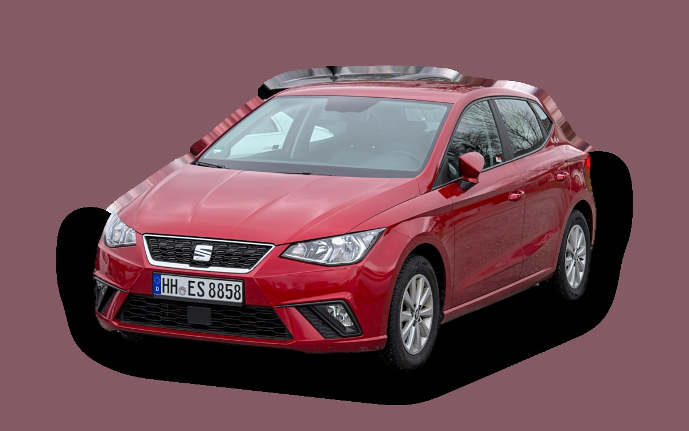

What does a Seat Ibiza cost per month?
A 2023 Seat Ibiza costs about SEK 2,828 a month, all in.
SEK 2,828per month, 2023 model
SEK 139,000price, 2023 model
SEK 204,300new from
Cvalue grade (2023)


Monthly cost by model year
| Model year | Version in the calculation | Price | Per month | Grade |
|---|---|---|---|---|
| 2026 | 1.0 TSI 95 manuell, Style | SEK 204,300 | SEK 3,632 | C |
| 2023 | 1.0 TSI 95 manuell, Style | SEK 139,000 | SEK 2,828 | C |
| 2020 | 1.0 TSI 95 manuell, Style | SEK 103,000 | SEK 2,652 | C |
Based on 5 years of ownership and 12,500 km a year, with fuel prices from 2026-10-22. The monthly cost includes depreciation, fuel, servicing and repairs, insurance and road tax.
How the cost splits for a 2023 car
- Depreciation: SEK 852/mo
- Fuel: SEK 1,142/mo
- Servicing and repairs: SEK 430/mo
- Insurance: SEK 353/mo
- Road tax: SEK 52/mo
Used prices in ads
| Model year | Median price | Ads | Typical mileage |
|---|---|---|---|
| 2024 | SEK 179,900 | 18 | 30,000 km |
| 2023 | SEK 172,400 | 14 | 36,000 km |
| 2022 | SEK 139,900 | 5 | 56,000 km |
| 2021 | SEK 127,400 | 12 | 66,000 km |
| 2020 | SEK 129,800 | 8 | 79,000 km |
| 2019 | SEK 98,000 | 9 | 89,000 km |
| 2018 | SEK 104,900 | 7 | 103,000 km |
The median price in Swedish ads by model year in October 2026 (source: Blocket, AutoUncle). Ad prices are asking prices, and the final price may be lower.
Engines and versions
| Engine | Fuel | Power | 0–100 km/h | Consumption (WLTP) | Range | Model years | Extra cost |
|---|---|---|---|---|---|---|---|
| 1.0 TSI 95 manuell | Petrol | 95 hp | 10.8 s | 5.3 l/100 km | – | 2018– | – |
| 1.0 TSI 115 DSG | Petrol | 115 hp | 9.6 s | 5.5 l/100 km | – | 2018– | +SEK 50,900 |
- Trim: Style, FR (+SEK 25,000)
Facts
- Body
- Hatchback
- Model years
- 2018–
- New from
- SEK 204,300
- Boot
- 355 litres
- Euro NCAP
- 5 of 5 stars
- New-car warranty
- 3 years
- Reliability
- 3.5 of 5
- Comprehensive insurance, estimate
- SEK 5,500/yr
- Servicing, estimate
- SEK 3,100/yr
Common faults to watch for
- DSG gearbox DQ200 (mechatronics, clutch), repair about SEK 20,000
The faults apply to some engines and model years. The calculator works out the risk for the exact version you choose.
Pros and cons
Pro
Roomy and fun to drive for a small car.
Con
Firm suspension and basic materials.
Similar cars
 Skoda ScalaSEK 2,814/mo as a 2020 model
Skoda ScalaSEK 2,814/mo as a 2020 model Dacia SanderoSEK 2,792/mo as a 2023 model
Dacia SanderoSEK 2,792/mo as a 2023 model MG4SEK 2,780/mo as a 2024 model
MG4SEK 2,780/mo as a 2024 model Renault ClioSEK 2,884/mo as a 2023 model
Renault ClioSEK 2,884/mo as a 2023 model Volkswagen PoloSEK 2,747/mo as a 2020 model
Volkswagen PoloSEK 2,747/mo as a 2020 model Hyundai i20SEK 2,739/mo as a 2023 model
Hyundai i20SEK 2,739/mo as a 2023 model
Updated 2026-10-27 · ad data Oct 2026